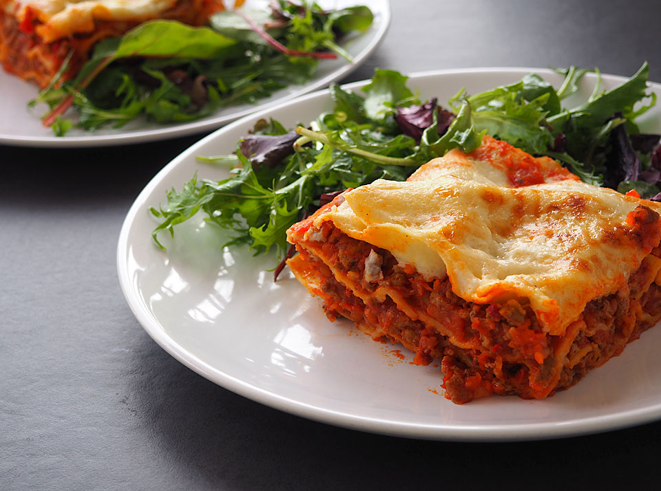

Lasagna Bolognese
Apasa aici pentru a te intoarce la meniul acasa.

Lasagna bolognese este o mancare extrem de delicioasa care se pregateste in straturi de paste, sos Bolognese si sos Bechamel.
Pentru a prepara lasagna aveti nevoie de urmatoarele ingrediente:
Pentru sos Bolognese:
- 1 kg carne tocata de vita
- 1 kg rosii pasate
- 3-4 linguri ulei
- 2 linguri pasta de tomate
- 2 morcovi
- 2 cepe
- 2 frunze de dafin
- 3 catei de usturoi
- putin rozmarin
- putin cimbru
- ierburi italiene
- sare
- piper
Pentru sos Bechamel:
- 700 ml lapte
- 70 g faina
- 70 g unt
- 1 frunze de dafin
- putin cimbru
- nucsoara
- piper
- sare
Pentru asamblare:
- 200g mozarella rasa
- 100g parmezan
- foi lasagna
Dupa ce avem toate ingredientele la indemana, putem trece la pasii de preparare.
Pasi de preparare:
- Tava se unge cu unt din abundenta, apoi se toarna un strat din sosul bechamel, atat cat sa acopere fundul tavii. Deasupra acestui prim strat de sos bechamel se aranjeaza un strat de foi de lasagna.
- Deasupra de stratul de foaie se pune din nou un strat subtire de sos bechamel. Se continua cu un strat generos de sos bolognese.
- Se respecta aceeasi succesiune in cotinuare: foaie de lasagna + sos bechamel + sos bolognese. Sosul bolognese trebuie complet distribuit in cele trei 4 straturi, din sosul bechamel se pastreaza o rezerva. Optional, intre straturi se pot adauga si bucatele de mozzarella, care se vor topi placut, dar vor ridica si mai mult cantitatea de calorii a unui preparat deja consistent.
- Se aseaza in tava ultimul strat de foi. Se acopera ultima strat de paste cu sosul bechamel pastrat.
- Tava se infoliaza cu o folie de aluminiu in care se fac cateva perforatii si se da la cuptorul preincins la 180°C, pentru 30 de minute. Daca aveti o tava prevazuta cu capac, cu atat mai bine, il folositi pe acela. Dupa trecerea acestui timp, se indeparteaza folia de aluminiu/capacul si se distribuie pe deasupra un strat generos de parmezan razuit sau de branza gratinabila (cu mozarella veti obtine un strat care se va intinde in fire subtiri).
Pofta mare!